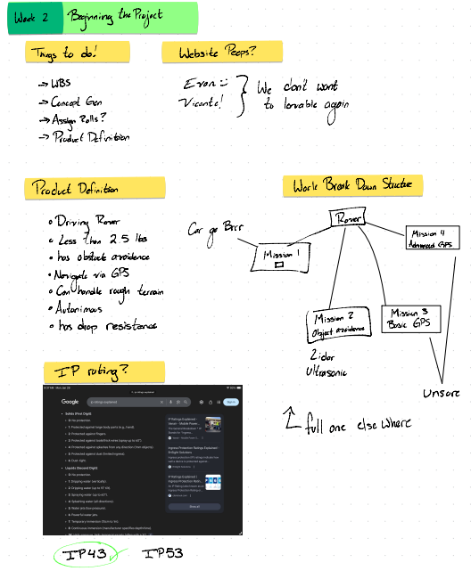
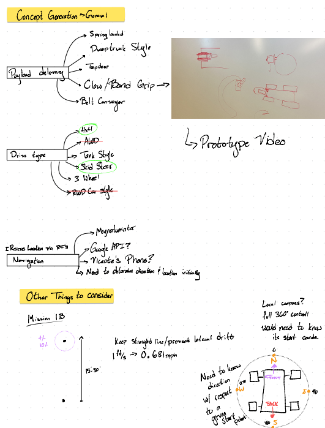
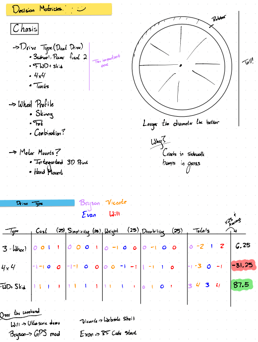
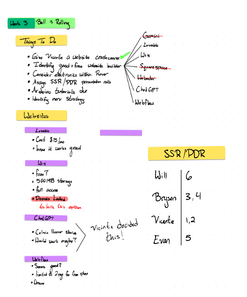
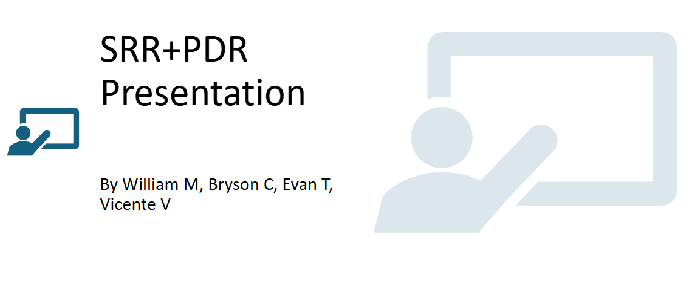
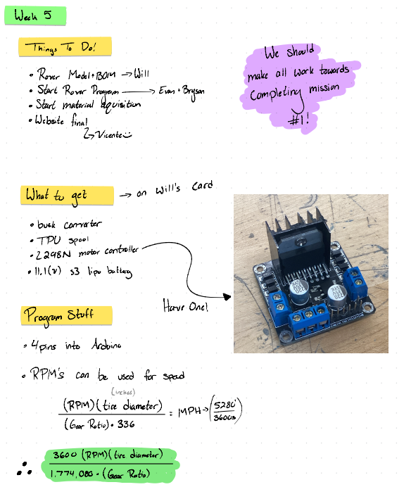
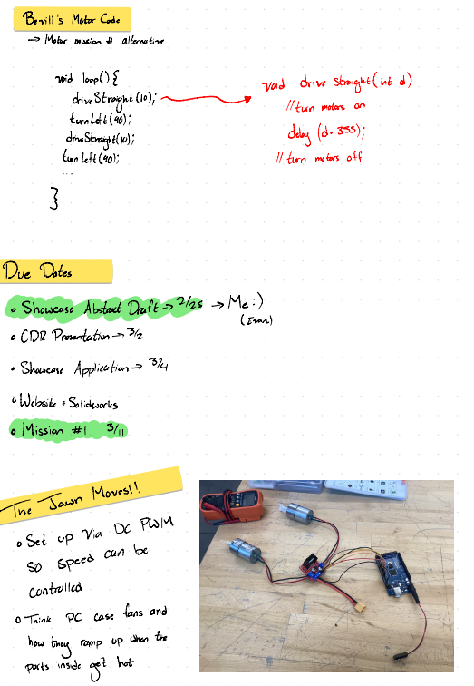
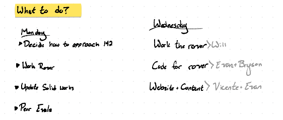

Weekly Team Meeting Summaries
These are the summaries of our weekly team meetings. There are 17 weeks, and each dropdown will give a summary of what the team did each week. NOTE * All of this happened in the 2026 CMU spring semester from January 2026 - May 2026
Week 1 Summary: Jan 18th - 24th.
Summary: For week 1 The team assembled and made a teram contract that the team sgined for this semester's Rover project
(Example: roles assigned, project requirements reviewed, initial planning.)
Week 2 Summary: Jan 25th - 31st.
Summary: For week 2, the team began brainstorming on what to do in the beginning of this project. The team started to figure out how to work on the website, Product definition, Work Breakdown Structure, decision matrices, and concept generation.
Week 2 – Photo 1

Week 2 – Photo 2

Week 2 – Photo 3

Week 3 Summary: Feb 1st - 7th.
Summary: For week 3, the team helped Vicente on how to use/find the right tools for making the website! The team also worked on who was going to work on what slides for the SSR/PDR Presentation.
Week 3 Notes / Planning

Week 4 Summary: Feb 8th - Feb 14th.
Summary: For week 4, the team presented there SRR + PDR Power Point presentation to Integration Industries.
Week 4 SRR+PDR pic

Week 5 Summary: Feb 15th - 21st.
Summary: For week 5 the team bought parts such as busk coneverotr, TPU spool, and an 11.1Volt s3 Lipobattering. The tema worked on programing, asked dr.Bevill for advice on coding for mission 1, and started to maker a rough draft of the abstract for The showcase. The team also got motors running.
Week 5 Summary pics photo 1

Week 5 Summary pics photo 2

Week 6 Summary: Feb 22nd - 28th.
Summary:The team worked on thier CDR Presentations, Website submission and SolidWorks Model and Draft of Student Showcase Abstract. The team also worked on assembling the rover
Week 7 Summary: March 1st - 7th.
Summary: The team presented thier CDR presentaion, worked on the rover, and worked on Website Update #2.
Week 8 Summary: March 8th - 14th.
Summary: The team worked on presenting Mission 1 to Dr. Bevill, and got ready for being graded on mission 1 on wednesday March. 11. 2026.
The team was sucessfull in completing all parts to mission 1.
Week 9 Summary: March 15th - 21st.
Summary: The team rested and enjoyed their time off since this week was Spring break.
Week 9 Summary pics photo 2

Week 10 Summary: March 22nd - March 28th.
Summary: The team worked on the website for website Update #3, and worked on the rover for Mission 2, that will happen on Monday, March 30th.
Team member William swapped motors, and mount plates for all the new parts; William worked on tuning as well. William is working on wiring everything up as well; William redid mission 1 a code because of that.
The tema also made 2 decison matrticies for the following; front distance sensor matrix, and front sensor type matrix. The team voted on sweeping for front distance sensor, and Ultra Sonic, for Front snesor type.
Team members Vicente and Evan worked on the website.
Team member Bryson worked on coding for mission 2.
The tema was succesful in compeleting qll of Mission 2a
Week 10 Summary pics photo 1

Week 10 Summary pics photo 2

Week 11 Summary: March 29th - April 4th.
Summary:The team worked on doing Mission 2b and succesfully completed mission 2B.
Vicente worked on the website, Bryson and William worked on debugging code for Misssion 2b.
Evan started and looked at Mission 3 code.
Week 12 Summary: April 5th - April 11th.
Summary:
Mission 2B was worked on by Bryson and William, Vicente worked on the website, and evan started mission 3 code.
Sensor was acting weird and the team worked on how to fix it.
evan learend how to call a magnometer for zeroing a rover.
Week 13 Summary: April 12th - April 18th.
Summary: (Type Week 13 meeting summary here.)
Week 13 summary pic.

Week 14 Summary: April 19th - April 25th
Summary: Week 14 summary: April 19th- 25th.
The team worked on completing om GPS coordinate Code, Solidworks Assembly model for mission #4, and started Mission #4 Presentation.
Week 15 Summary: April 26th - May 2nd
Summary:
The team worked on the Mission 4 presentation. The team prepared and made a poster for the CO Mesa student showcase, where the group presented their rover for all of campus to see. The team still needed to work on the mission 4 presentation
Week 16 Summary: May 3rd - May 9th
Summary:The team worked on their final formal powerpoint presentation and presented it to the head of Integration Industries (Dr.Bevill). Dr Bevill assigned IWF peer evaluations, and the team filled that out. The team also worked on the final website update that is /was (depending when you are reading this) on May 13th, 2026.
Week 17 Summary May 11 - 13th
Summary: The team worked on the final touches of getting all the code done for mission 4a and 4b, the website done, and showed/ sent videos of the rover doing mission 4a and 4b, and sent them to Dr.Bevill. The end.